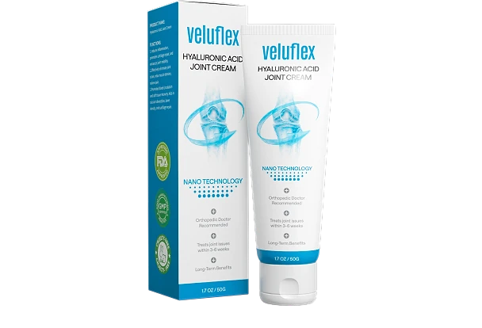
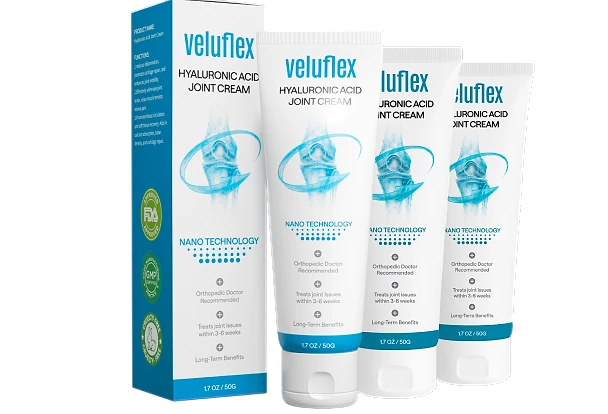

Was ist Veluflex und wie wirkt es?
Veluflex ist eine Gelenkcreme mit Hyaluronsäure, die äußerlich auf die Haut über dem betroffenen Gelenk aufgetragen wird. Laut der offiziellen Website wurde die Formel für Menschen entwickelt, die sich bei Steifheit und Beschwerden in Knien, Händen, Schultern oder anderen Gelenken mehr Beweglichkeit im Alltag wünschen.
Die Creme wird in einer Tube mit 50 g Inhalt (1,7 oz) angeboten. Auf dem Etikett stehen die Angaben „Hyaluronic Acid Joint Cream“ und „Nano Technology“. Der Hersteller beschreibt Veluflex als ein Produkt zur rein äußerlichen Anwendung, das also nicht geschluckt, sondern direkt auf die Haut gegeben wird.
Nach Angaben der offiziellen Website kombiniert die Formel insgesamt 13 Inhaltsstoffe. Im Mittelpunkt stehen Hyaluronsäure, Vitamin E in Form von Tocopherolacetat, Allantoin, ein Pferdefett-Lipid-Komplex und Kamillenextrakt. Ergänzt werden sie durch ein Trägersystem aus Glycerin, Mineralöl und Caprylic-Triglycerid.
Die Idee hinter dem Produkt ist laut Hersteller einfach: Die Creme soll gut in die Haut einziehen, damit die enthaltenen Pflegestoffe dort ankommen, wo sie gebraucht werden. Das Trägersystem ist darauf ausgelegt, die Aufnahme der Inhaltsstoffe über die Haut zu unterstützen.
Hyaluronsäure ist dafür bekannt, sehr viel Wasser binden zu können, und wird deshalb häufig in Hautpflegeprodukten eingesetzt. Allantoin und Vitamin E gelten als klassische Pflegestoffe, während Kamillenextrakt seit langer Zeit in Cremes und Salben verwendet wird. Der Pferdefett-Lipid-Komplex soll der Creme eine geschmeidige, pflegende Konsistenz geben.
Viele Anwender schätzen an einer Creme, dass sie sich unkompliziert in die tägliche Routine einbauen lässt. Die offizielle Website empfiehlt, eine dünne Schicht mehrmals täglich auf das Gelenk aufzutragen und sanft einzumassieren, bis sie vollständig eingezogen ist.
Wie bei jedem Pflegeprodukt gilt: Die Erfahrungen fallen von Person zu Person unterschiedlich aus, und Ergebnisse können variieren. Veluflex kann eine regelmäßige Gelenkpflege unterstützen, ersetzt aber keine ärztliche Untersuchung. Bei anhaltenden oder starken Beschwerden sollten Sie immer mit Ihrem Arzt sprechen.
Veluflex Inhaltsstoffe
Laut der offiziellen Website enthält Veluflex 13 Inhaltsstoffe. Die wichtigsten davon sind:
Hyaluronsäure: kann ein Vielfaches ihres Eigengewichts an Wasser binden und wird in der Hautpflege geschätzt, weil sie Feuchtigkeit spenden kann.
Vitamin E (Tocopherolacetat): ein bekannter Pflegestoff, der in vielen Cremes zur Pflege der Haut eingesetzt wird.
Allantoin: wird in Hautpflegeprodukten häufig verwendet und ist darauf ausgelegt, die Haut zu beruhigen und geschmeidig zu halten.
Pferdefett-Lipid-Komplex: soll der Creme laut Hersteller eine reichhaltige, gleitfähige Textur verleihen.
Kamillenextrakt: enthält laut offizieller Website die Bestandteile Bisabolol und Matricin, die traditionell in Pflegeprodukten genutzt werden.
Trägersystem aus Glycerin, Mineralöl und Caprylic-Triglycerid: soll dafür sorgen, dass die Creme gut in die Haut einzieht.
Als weitere Bestandteile nennt der Hersteller Benzylalkohol und Benzoesäure, Polydimethylsiloxan, Carbomer mit Triethanolamin sowie Cetearylpolyether. Sie dienen vor allem der Haltbarkeit, der Gelkonsistenz und dem angenehmen Einziehen der Creme.
Wenn Sie empfindliche Haut haben oder auf einzelne Stoffe allergisch reagieren, lohnt es sich, die vollständige Liste der Inhaltsstoffe auf der offiziellen Website oder auf der Verpackung vor der ersten Anwendung genau zu prüfen.
Veluflex Dosierung
Laut der offiziellen Website wird Veluflex zwei- bis dreimal täglich angewendet. Dazu tragen Sie eine dünne Schicht der Creme direkt auf die Haut über dem betroffenen Gelenk auf.
Anschließend wird die Creme sanft einmassiert, bis sie vollständig eingezogen ist. Eine dicke Schicht ist laut Hersteller nicht nötig; entscheidend ist, dass die Creme gleichmäßig verteilt wird und Zeit hat, in die Haut einzuziehen.
Veluflex ist ausschließlich für die äußerliche Anwendung gedacht. Tragen Sie die Creme nur auf intakte Haut auf und vermeiden Sie den Kontakt mit Augen, Schleimhäuten und offenen Wunden. Nach dem Auftragen sollten Sie sich die Hände waschen, sofern nicht gerade die Hände eingecremt wurden.
Viele Anwender bauen die Creme in feste Zeiten des Tages ein, zum Beispiel morgens nach dem Aufstehen, nach körperlicher Aktivität und abends vor dem Schlafengehen. Eine regelmäßige Anwendung über mehrere Wochen ist laut Hersteller sinnvoll, da sich Erfahrungen oft erst mit der Zeit zeigen. Ergebnisse können variieren.
Die offizielle Website empfiehlt das Produkt nicht für Personen unter 18 Jahren. Wenn Sie schwanger sind, stillen, Medikamente einnehmen oder an einer Erkrankung leiden, sprechen Sie vor der Anwendung mit Ihrem Arzt. Das gilt auch, wenn Sie unsicher sind, ob die Creme für Ihre persönliche Situation geeignet ist.
Veluflex – Rückerstattung
Laut der offiziellen Website wird Veluflex mit einer 30-Tage-Geld-zurück-Garantie angeboten. Wer mit dem Produkt nicht zufrieden ist, kann sich innerhalb dieses Zeitraums an den Kundenservice wenden und eine Erstattung beantragen.
Der Hersteller beschreibt die Rückerstattung als unkompliziert und ohne lange Rückfragen. Die genauen Schritte, etwa ob die Tuben zurückgeschickt werden müssen und an welche Adresse, nennt die Verkaufsseite nicht im Detail. Diese Informationen erhalten Sie jederzeit direkt beim Kundenservice, der Ihnen auch sagt, welche Unterlagen für die Erstattung benötigt werden.
Auf der offiziellen Website sind eine Telefonnummer und eine E-Mail-Adresse für den Kundenkontakt angegeben. Als Unternehmen hinter Veluflex wird dort die Haur B.V. mit Sitz in Amsterdam in den Niederlanden genannt.
Bevor Sie eine Bestellung aufgeben, empfiehlt es sich, die aktuellen Bedingungen der Rückerstattung auf der offiziellen Website zu lesen. Bedingungen können sich ändern, und nur die Angaben des Herstellers sind verbindlich.
Bewahren Sie nach dem Kauf Ihre Bestellbestätigung und die Kontaktdaten des Kundenservice gut auf. So können Sie im Fall einer Rückerstattung schnell nachweisen, wann und was Sie bestellt haben, und Ihre Anfrage innerhalb der Frist stellen.
Wichtig: Die Geld-zurück-Garantie wird auf der offiziellen Website beschrieben. Bei Käufen über andere Händler oder Marktplätze ist nicht sicher, dass Sie dieselbe Rückerstattung erhalten.
Veluflex Kundenbewertungen
-
Daniel S. — Frankfurt am MainVerifizierter Kauf – 6 Flaschen
„Meine Knie waren so schlimm, dass ich keine Treppen steigen konnte. Jetzt wandere ich jedes Wochenende. Ich bin 71.“
-
David R. — StuttgartVerifizierter Kauf – 6 Flaschen
„Meine Hände waren nutzlos. Ich konnte meinen Enkel nicht halten. Zwei Wochen später? Schmerzfrei und spiele jeden Tag mit ihm.“
-
Jennifer B. — MünchenVerifizierter Kauf – 6 Flaschen
„20 Jahre Schmerzen. … Veluflex wirkte nach 9 Tagen. …“
Veluflex – Wo kaufen?
Veluflex ist laut Hersteller über die offizielle Website erhältlich. Dort finden Sie die aktuellen Packungsgrößen, die Informationen zur Lieferung sowie die Bedingungen der 30-Tage-Geld-zurück-Garantie an einem Ort.
Die offizielle Website nennt keine Apotheken, Drogerien oder großen Onlinehändler als Verkaufsstellen. Angebote auf Marktplätzen oder Auktionsseiten stammen daher nicht unbedingt vom Hersteller, und es ist nicht sicher, ob dort die echte Formel verkauft wird. Auch das Haltbarkeitsdatum und die Lagerung der Ware lassen sich bei solchen Angeboten meist kaum zuverlässig überprüfen.
Ein Kauf direkt beim Hersteller hat zudem den Vorteil, dass die Geld-zurück-Garantie greift und der Kundenservice bei Fragen zur Bestellung oder zur Anwendung erreichbar ist. Bei Drittanbietern ist das nicht in gleicher Weise gegeben.
Achten Sie beim Besuch der Website darauf, dass die Adresse veluflex.com lautet und der Bestellvorgang über eine sichere Verbindung läuft. So stellen Sie sicher, dass Sie die originale Gelenkcreme in der Tube mit 50 g erhalten, wie sie auf der offiziellen Website beschrieben wird.
Um sicherzugehen, dass Sie das Originalprodukt erhalten, besuchen die meisten Nutzer die offizielle Website.
Ist Veluflex Betrug?
Nach den verfügbaren Informationen gibt es keinen Hinweis darauf, dass Veluflex Betrug ist. Das Produkt wird über eine eigene Website angeboten, auf der Inhaltsstoffe, Anwendung, Kontaktmöglichkeiten und ein verantwortliches Unternehmen genannt werden.
Als Anbieter tritt laut offizieller Website die Haur B.V. aus Amsterdam in den Niederlanden auf. Zusätzlich stellt die Website eine Telefonnummer und eine E-Mail-Adresse für den Kundenservice bereit, was bei seriösen Anbietern üblich ist.
Positiv ist auch, dass die vollständige Liste der 13 Inhaltsstoffe veröffentlicht wird. So können Sie vor dem Kauf selbst prüfen, was in der Creme enthalten ist, und sie bei Bedarf mit Ihrem Arzt oder Apotheker besprechen.
Die 30-Tage-Geld-zurück-Garantie gibt Käufern außerdem die Möglichkeit, das Produkt auszuprobieren und bei Unzufriedenheit eine Erstattung zu beantragen. Lesen Sie die genauen Bedingungen dennoch vorab auf der offiziellen Website nach.
Vorsicht ist vor allem bei Angeboten außerhalb der offiziellen Website geboten. Nachahmungen oder Restposten unbekannter Herkunft können anders zusammengesetzt sein, und bei solchen Käufen gilt die Garantie des Herstellers in der Regel nicht.
Wie bei jedem Pflegeprodukt sollten Sie realistische Erwartungen haben: Ergebnisse können variieren, und eine Creme ersetzt keine ärztliche Behandlung. Wer diese Punkte beachtet und direkt beim Hersteller bestellt, geht beim Kauf von Veluflex nach heutigem Stand kein besonderes Risiko ein.
Wer Produktdetails überprüfen oder die aktuelle Verfügbarkeit prüfen möchte, ist auf der offiziellen Veluflex-Website am sichersten aufgehoben.
